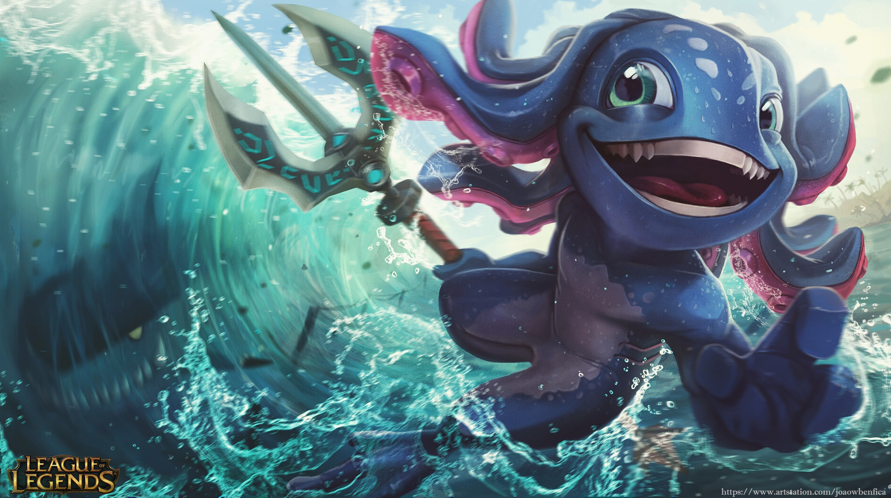

League of Legends
League of Legends (LOL) is a multiplayer online battle arena video game developed and published by Riot Games for Microsoft Windows and macOS.
The game follows a freemium model and is supported by microtransactions, and was inspired by the Warcraft III: The Frozen Throne mod, Defense of the Ancients.In League of Legends, players assume the role of an unseen "summoner" that controls a "champion" with unique abilities and battle against a team of other players or computer-controlled champions.
The goal is usually to destroy the opposing team's "nexus", a structure which lies at the heart of a base protected by defensive structures, although other distinct game modes exist as well.